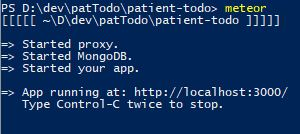
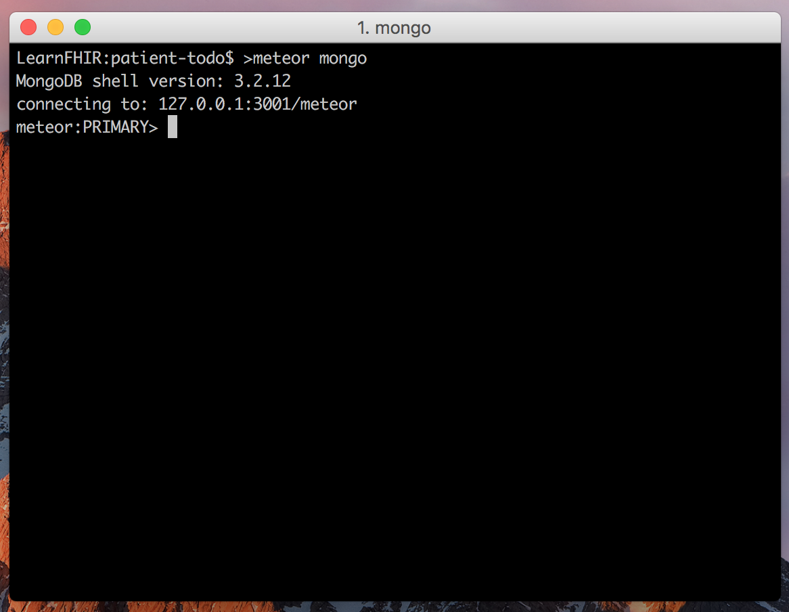
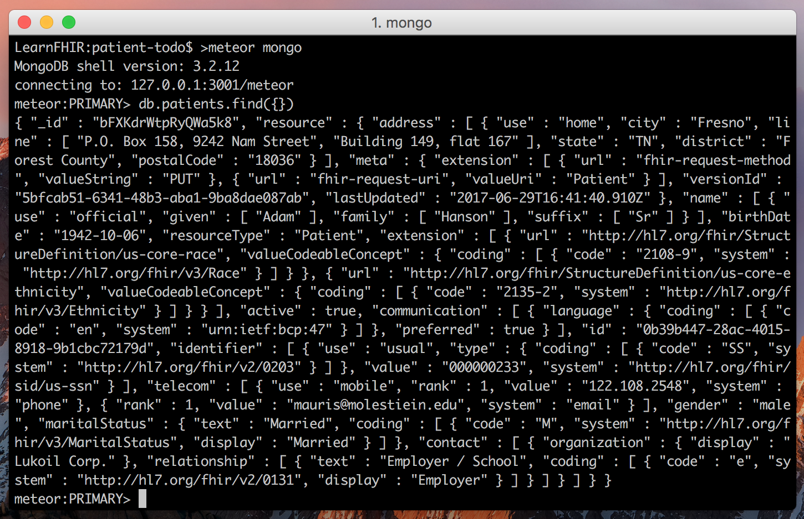
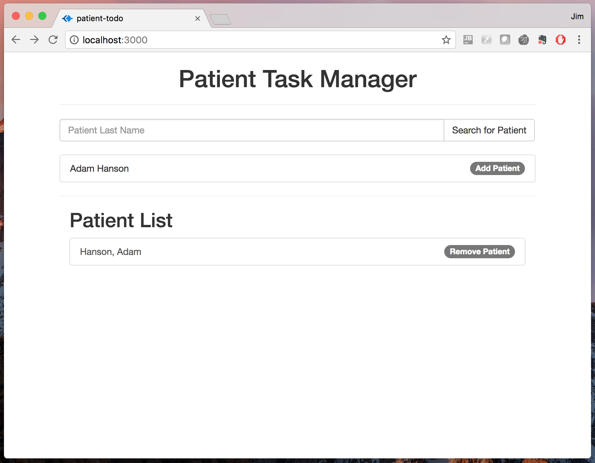
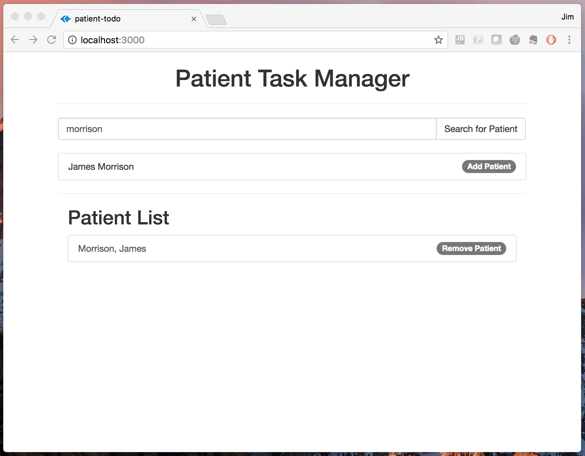
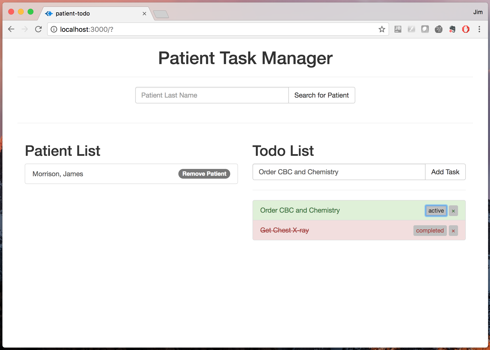

Introduction
This tutorial will show you how to create a FHIR based web application that reads, writes, updates, and deletes FHIR resources from a remote server. The application we will build is a simple patient task manager. Essentially this is a "To-Do" list for a healthcare provider to keep track of all the tasks needed in the care of a patient.
The FHIR resources used in this application are:
- Patient
- CarePlan
To make creation of this web app easier we are using the open-source web framework, MeteorJS. Meteor simplifies creation of web based tools by supplying a robust premade client-server infrastructure that allows us to focus on creating, manipulating, and displaying data (the fun stuff).
While this tutorial is intended to be used by anyone, regardless of programming background, it may be helpful to start by doing the "To Do" tutorial on the Meteor website (link here). The Meteor tutorial does go more in depth into the capabilities of Meteor then is needed for his tutorial, but also gives a good overview of the basic concepts and components of the framework.
All together, this tutorial consists of 205 lines of code (including some spaces), and we will build the app piece by piece.
A note on coding style:
This app was created purposefully to be in a single HTML file. One of Meteor's strengths is its templating engine, which we are not making use of for the sake of simplicity. The goal of this tutorial is the use of FHIR, rather than using Meteor. Also, I don't use ending semi-colons - because they are not needed in JavaScript, and tabs, not spaces. :)
Step 1: Creating a Meteor App
To create a Meteor application you must first install Meteor on your machine. This is a pretty easy process, simply follow the instructions at the Meteor website:
Meteor InstallationOnce Meteor is installed on your computer you are ready to create your first application. Open a command prompt window and type:
meteor create patient-todo
This will tell Meteor to create the basic framework and directory structure for your application. There is simple built-in webpage to test that meteor is working. At the command prompt, navigate to the directory of your application:
cd patient-todo and then simply type:meteor
Hit enter and the Meteor framework will begin to build your application. The first time you run Meteor at the command line it will take a bit to download all the necessary components and start your application. Once the process is completed you should see a message at the command prompt that looks like this:

If you then open a web browser (Google Chrome is recommended for its debugging capabilities) and type `localhost:3000` into the address bar you should see a web page like below. The `localhost` portion of the address is telling the web browser to reference the local computer (the one you are using) and the :3000 is directing it to PORT 3000, which is the default port that Meteor applications use. If you have another program running on PORT 3000 then you may receive an error at the command line and the application will fail to load.
If everything went well, you should now see this in your web browser:

You can stop the Meteor application from running at the command line by typing `CTRL-C`. The application will exit and you will be back to the command prompt. Stop the application now so that we can complete the final portion of Step 1.
We will add one directory to the application structure to eventually hold our database collection code. From the command line (or file explorer), make a new folder in the project dierectory called `import`. Your project directory should look something like this:
Now that we have installed Meteor and created the basic framework for our application, lets add a few additional building blocks to make our job even easier. Proceed to Step 2.
Step 2: Adding Packages
Meteor makes it easy to add other open-source packages and components to the framework to enhance and extend the basic capabilities. We will use the following packages to make communication with the FHIR server easier and the overall look of our webpage prettier.
Packages:
The first package that we will add is called `HTTP`. This package allows you to send HTTP calls to a remote server. Since the basis for FHIR is as a REST API over HTTP supporting the standard CRUD operations (C-create, R-read, U-update, D-delete) the HTTP package is perfect for our purposes.
At the command line, execute the following:
meteor add http
The second package to add is called `Session`. This package adds the use of "Session" variables within a client web broswer. When a user navigates to the app webpage, the application can create unique Session variables which exist for that particular user as long as the webpage is open in the browser. Once the window is closed the Session variables are destroyed. The particularly useful thing about Session variables in the Meteor framework is that when the value of the variable changes, it forces elements within the webpage to change as well. We will use these variables to identify when a user has made a selection and update the webpage to reflect that choice.
Again, at the command line, execute the following:
meteor add session
The final package to add is `Bootstrap`. Bootstrap is a library of HTML-, CSS-, and JavaScript- based design templates for the web front-end. Bootstrap makes it easy to quickly build visually appealing websites. There are a variety of similar libraries out there such as Zurb Foundation and Semanti UI, but Bootstrap is easy and widely accepted, so we will enploy it to make our webpage a little prettier.
Finally, at the command line, execute the following:
meteor add twbs:bootstrap
Proceed to Step 3...
Step 3: Searching for a Patient
The first functionality we will add to the application is the ability to search for a particular patient in the FHIR database. We will keep this simple, and look patients up by their last name, allowing a user to then select a patient from the search result list.
Let's being by adding a title and some styling to our web page. Open the main.html file located in the patient-todo/client directory. Delete the Meteor starter HTML, so that the file now looks like this:
This will be our blank HTML slate to build upon. I have left place holder comments in the code, so you need to do is copy the tutorial code and replace the ≺!-- Step x HTML code goes HERE --> markers at each step. Add the following HTML into the body section of the client/main.html file.
Step 3.1 HTML Code
If you run Meteor from the command line in the project directory (/patient-todo/meteor) and then open a web browser window to localhost:3000 then you should see the following:

Next let's add the search input box and button to initite the patient search. Much of the following code, particularly the class="" delcarations, are components of Bootstrap used to make the page look pretty. Don't feel overwhelmed if you don't quite understand all the details of what we are doing in the HTML. The important points here are the input and button elements. This code snippit should also be added to the client/main.html file, just below the code we added above.
Step 3.2 HTML Code
With Meteor still running from the command line, you should be able to simply reload the webpage in the browser and now see something like this:

You can type in a name and press enter in the box (or press the search button). At this point the visual elements of the search are present, but entering a name and clicking the search button doesn't do anything. To make these pieces work, we need to add some JavaScipt code to the client/main.js file. Find and open that file in your project patient-todo/ directory, and delete the Meteor starter code so our blank JavaScript slate only contains 2 lines of code and looks like this:
Step 3.3 JavaScript Code
import { Template } from 'meteor/templating'
import './main.html'
These two lines tell our application to load the Meteor Templating engine and then tie this JavaScript file to the main.html webpage. Let's add two snippits of code beneath the import './main.html' line.
The first piece of code we will add will listen for a user to click (or press enter) on the "Search for Patient" button that we created on the webpage. To do this we add a code section called events. Copy and paste the code below into the main.js file.
Step 3.4 JavaScript Code
Template.body.events({
'click #patientSearch' : function(event) {
event.preventDefault()
let name = $('#patientName').val()
Meteor.call('FHIRpatientSearch', name, function(err, res) {
Session.set('patientSearchList', res.entry)
})
},
//Insert Step 5.3 Code Here
//Insert Step 6.3 Code Here
//Insert Step 7.2 Code Here
//Insert Step 7.4 Code Here
})
//Insert Step 4.1 Code Here
This code tells the webpage to listen for a click on the HTML element with an id of patientSearch. If you look back at the HTML we added above, you will see that the button we created has that id. So everytime the "Search" button is clicked the webpage will execute the code within this 'click #patientSearch' function. The function itself retrieves the text that we entered into the input box and sends that information to our web app server in order to make a call via FHIR.
In order to make this function work, we need to add the server side code that sends the search query to the FHIR server. Let's do that now by editing the main.js file in the patient-todo/server directory. To the bottom of the main.js file, add the following code snippit:
Step 3.5 JavaScript Code
import { HTTP } from 'meteor/http'
Meteor.methods({
FHIRpatientSearch : function (searchString) {
let result = HTTP.call('GET', "http://learnfhir.aidbox.io/fhir/Patient?family=" + searchString)
return JSON.parse(result.content)
},
// Step 5.4 Code Goes HERE
// Step 6.4 Code Goes HERE
// Step 7.5 Code Goes HERE
// Step 8.3 Code Goes HERE
})
This code makes a request of the remote FHIR server (in this case "learnfhir.aidbox.io"). The request is to retrieve all Patient resources with a family name equal to the value of the input box from our web client. So when a user enters a name into the box and presses enter, that name is sent to the application server, which then performs a request of the FHIR sevrver to find all Patient records with that name and return the results. We then pass those results back to the user's web client.
To view those results in the webpage proceed to Step 4...
Step 4: Showing the Search Results
Now we need to show the patient search results in a list and allow users to select a patient or patients to follow.
Returning to the client code, the second code piece we will add defines some webpage "helpers". In Meteor, helpers can be thought of as placeholders or holes in the webpage. When the browser loads the webpage, these placeholders are filled in dynamically with data depending on how we define them in our JavaScript code. Add the following code to your client/main.js file:
Step 4.1 Code
Template.body.helpers({
patientSearchResults : function () {
return Session.get('patientSearchList')
},
patientFirstName : function () {
return this.resource.name[0].given[0]
},
patientLastName : function () {
return this.resource.name[0].family[0]
},
patientId : function () {
return this.resource.id
},
//Insert Step 6.2 Code Here
//Insert Step 7.3 Code Here
//Insert Step 8.4 Code Here
})
Now that we have defined the "helpers" in the JavaScript file we can use them in our HTML file in order to display the dynamic content in the webpage. Replace the "4.2 HTML" placeholder in the client/main.html file with the following code:
Step 4.2 Code
Refresh your Meteor application/browser window. Then search for a patient by the name of "Hanson". After a few seconds, the webpage with search results should look like this:

Don't be surprised if there is a bit of a delay before you see the search results. There can often be some lag for the first request to the FHIR server, however subsequent requests will perform better. You can also try searching for a patient by the last name 'Morrison'.
Proceed to Step 5...
Step 5: Adding a Patient Collection
The next functionality we want to add to the application is the ability to create a custom patient follow-up list. We will use one of the fundmental parts of Meteor to do this - a MongoDB database. MongoDB falls under the NoSQL class of databases. Individual records within a MongoDB are referred to as "Documents" and a set of documents together is called a "collection". Let's build a collection of patients by retrieving their information for the FHIR server and creating a "Patients" collection where each document represents a separate patient.
To create a new collection we will make a new file in the /imports sub-directory of our project. Imports are pieces of code that can be referenced by both the client or server. Create a file called Patients.js and save it in the imports directory. Copy and paste the following code snippit into the file:
Step 5.1 Code
import { Mongo } from 'meteor/mongo'
export const Patients = new Mongo.Collection('patients')
if (Meteor.isClient) {
Meteor.subscribe('patients')
}
if (Meteor.isServer) {
Meteor.publish('patients', function PatientsPublication() {
return Patients.find({})
})
}
Now, to load the collection on both the client and the server, we need to create a reference to the collection in the main.js files on both the client and server. Copy and add the following line of code at the beginning of both client/main.js and server/main.js files.
Step 5.2 Code
import { Patients } from '../imports/Patients.js'
Finally, we need a way to add patients to this collection. In Step 4 our patient list had a button to "Add Patient". Let's add an "event" function that will react when a user presses this button and adds the selected patient to our "Patients" collection. Open your client/main.js file and add the following code snippit to the Template.body.events({ section so it looks like this:
Step 5.3 Code
'click #addPatient' : function(event) {
event.preventDefault()
Meteor.call('addPatient', this)
},
Now, create the addPatient function in the `server/main.js` file with the rest of the meteor methods.
Step 5.4 Code
addPatient : function (patient) {
Patients.upsert({ _id : patient._id }, patient)
return
},
This will add the patient to the database when you click the Add Patient button. Go ahead and try it in your browser.
As you will see, this will appear to do nothing since we aren't yet doing anything with the data. So, how do we know if the patient was actually added to the collection? Well, one way to confirm is to look at the MongoDB database directly. Meteor makes this easy to do from the command line. Open a new terminal window in the main directory and type:
meteor mongo
You should see something like this:
At the Mongo prompt type:
db.patients.find({})
This command will "find" all the patients in your database. If you have successfully added patient "Hanson" to your Patients collection then you should see something like the following:
Now that we can add patients of interest to a collection, let's add the necessary components to display and manage the patient follow-up list on our webpage.
Proceed to Step 6...
Now that we have a patient collection in our database that we can use for follow-up, let's work on displaying that collection in the webpage. We will add a new section to the main.HTML file that will show the patient list. Add the following code to the HTML file in the designated location:
Step 6.1 Code
If you save the client/main.html file and refresh the website you should now see something like this:

But you will notice that beyond the "Patient List" title, we are not seeing any selected patients. We should be seeing patient "Hanson" since we added that patient to the follow-up list in the previous step, and confirmed the addition of the data to the database. This is because we need to define a new "helper" in the JavaScript code that will display the database list on the webpage. To do this, copy the following code into the noted location in `client/main.js`:
Step 6.2 Code
patients : function () {
return Patients.find({})
},
Now, when you save the file and refresh the webpage you should see something like this:
The patient follow-up list is now populated below the patient search box. Fantastic!
The is one additional button that we would like to make functional. You will see that the follow-up patient list members each has a button to remove the patient from the list. To make this button functional we need to add two components - an event listener which tells the website what to do when a user clicks the "Remove" patient button, and a function which removes that particular patient from the database.
First, let's add the button click event listener. Add the following code to the client/main.js file.
Step 6.3 Code
'click #removePatient' : function (event) {
event.preventDefault()
Meteor.call('removePatient', this)
},
Next, add the following code to the server/main.js file. This code snippit will match any database record with the matching patient Id. In this implementation, each patient has a unique Id value.
Step 6.4 Code
removePatient : function (patient) {
Patients.remove({ _id : patient._id })
return
},
Once both of these pieces of code have been added, you should be able to search for a patient, add them to the follow-up list, and delete them from the follow-up list. In the picture below, the patient by the last name "Hanson" has been removed from the follow-up list and a patient by the last name of Morrison has been added instead.
To create a "To-Do" list for each follow-up patient, proceed to Step 7...
client/main.html file in the appropriate spot:
Step 7.1 Code
This will add a new "ToDo" list section to the right side of the screen, underneath the patient search box. We only want the input box to display when a patient has been selected. To do this we will add a new Session variable to hold the name of the selected patient and an event handler to tell the webpage when a patient has been selected from the Patient List. Add the following pieces of code in to the client/main.js file:
Step 7.2 Code
'click .chosenPatient' : function () {
Session.set('selectedPatient', this.resource.id)
},
Step 7.3 Code
selectedPatient : function () {
return Session.get('selectedPatient')
},
Save the file and refresh your webpage. Now when you click on a patient in the Patient List you should see the input box to add a new task. We will get to displaying and changing the status of new tasks in the next couple of steps. The web page should now look like this:

Now we need to add the code to create a new CarePlan task when a user pushes the "Add Task" button. Similar to previous steps, we will first add an "event" handler in the client/main.js file and then we will add code in the server/main.js file that will send our newly created CarePlan resource to the FHIR server.
Open the client/main.js file and add the following code snippet to the Templates.body.events({}) section:
Step 7.4 Code
'click #addTask' : function (event) {
event.preventDefault()
Meteor.call('FHIRaddCarePlan', $('#newTask').val(), Session.get('selectedPatient'))
updateTaskList(Session.get('selectedPatient'))
},
Next, open the server/main.js file and add the following code to the Meteor.methods({}) section:
Step 7.5 Code
FHIRaddCarePlan : function (task, patientId) {
let CarePlan = {
"resourceType" : "CarePlan",
"status" : "active",
"subject" : {
"reference" : "Patient/" + patientId
},
"description" : task
}
HTTP.call('POST', "http://learnfhir.aidbox.io/fhir/CarePlan", { data: CarePlan })
return
},
Now when a user types a task and selects "Add Task" the website will send that task to the server, which will then format it into a proper CarePlan resource, and then write that resource to the FHIR server.
If we type "Get Chest X-ray" into the input box and click "Add Task" nothing will happen, at least not that we can see. This is because we haven't added the code yet to display the list (Step 8). But the information should have made its way to the FHIR server. If we query the FHIR server directly, we should be able to find our CarePlan task.
Open a new browser window and type learnFHIR.aidbox.io/fhir/CarePlan (case sensitive) into the address bar. This will query the FHIR server for all CarePlan resources. You should get a response that looks like this:

Proceed to Step 8 to display the ToDo list in the webpage...
Now let's add the code to see the task list for a selected patient. We will first add the HTML code in to the client/main.html file, and then add the JavaScript to support the HTML elements. Copy and paste the following code into the appropriate spot:
Step 8.1 Code
If you save and refresh the website you will not see any changes yet. That is because we need to first load the CarePlan task list from the FHIR server. Since every time we add, change, or deleta a task we will want to refresh the ToDo List, let's add a generic function we can call at any time to get an updated list of CarePlan tasks. At the bottom of your client/main.js file, add the following code. This code will go outside and below the Template.body.events and Template.body.helpers sections:
Step 8.2 Code
function updateTaskList(patientId) {
Meteor.call('FHIRgetCarePlan', patientId, function (err, res) {
Session.set('patientTasks', res.entry)
})
}
Next we need to add the corresponding function on our server to retrieve the CarePlan tasks from the remote FHIR server. To do this, add the following code to the server/main.js file.
Step 8.3 Code
FHIRgetCarePlan : function (patientId) {
let result = HTTP.call('GET', "http://learnfhir.aidbox.io/fhir/CarePlan?patient=" + patientId)
return JSON.parse(result.content)
},
Finally, create a "helper" in the client/main.js file to supply the HTML with our patient ToDo list:
Step 8.4 Code
patientTasks : function () {
return Session.get('patientTasks')
},
After all this, if you save and refresh the webpage you still won't see a ToDo List. Why not? Because we have yet to call our updateTaskList() function. We will want to load/update the displayed ToDo list every time a patient is selected from the Patient List, and so we should call the updateTaskList() function from our chosenPatient event handler. Edit the code in your client/main.js file so that the 'click .chosenPatient' function now looks like this:
Step 8.5 Code
'click .chosenPatient' : function () {
Session.set('selectedPatient', this.resource.id)
updateTaskList(this.resource.id)
},
This will call the updateTaskList() every time a patient is selected from the Patient List. Save the file and try this now. Your webpage should now look like this (if you added a Task in Step 7)

The final step will allow us to delete and change the status of ToDo List tasks.
Proceed to Step 9...
For our final step, we will add the ability to modify an existing CarePlan task. This will be reflected not only on the webpage, but in the CarePlan resource on the FHIR server as well. Similar to what we've done in several prior steps, we will first add event handlers to the client/main.js code, then functions in the server/main.js that talk to the FHIR server, then a new helper in the client/main.js along with the slight changes to the HTML to make it easier to see what the status of a task is.
Let's start by adding those new event handlers in the client/main.js file:
Step 9.1 Code
'click #toggleStatus' : function (event) {
event.preventDefault()
Meteor.call('FHIRtoggleCarePlanStatus', this.resource)
updateTaskList(Session.get('selectedPatient'))
},
'click #deleteTask' : function (event) {
event.preventDefault()
Meteor.call('FHIRdeleteCarePlan', this.resource)
updateTaskList(Session.get('selectedPatient'))
}
Then continue by adding the corresponding functions in the server/main.js file:
Step 9.2 Code
FHIRtoggleCarePlanStatus : function (carePlan) {
carePlan.status = carePlan.status == "active" ? "completed" : "active"
HTTP.call('PUT', "http://learnfhir.aidbox.io/fhir/CarePlan/" + carePlan.id, { data : carePlan })
},
FHIRdeleteCarePlan : function (carePlan) {
HTTP.call('DELETE', "http://learnfhir.aidbox.io/fhir/CarePlan/" + carePlan.id)
},
With those code sections added above you should now be able to delete a ToDo List task and modify it from "active" to "completed". To make it a little more visually intuitive, lets change the color of a task depending on its status. To do this we will add a helper that will allow our HTML to query the status of a given task and set some display parameters accordingly.
For the last time, open the client/main.js file and add the following code the the Template.body.helpers({}) section:
Step 9.3 Code
status : function(status) {
return this.resource.status == status
},
Now let's alter our existing HTML so that it changes how each ToDo List task looks depending on the CarePlan status. Locate the HTML element under the ToDo List section that begins with <li class="list-group-item">. Edit both the class attribute of the <li> element as well as the code within the list item so it looks like this:
Step 9.4 Code
Now when you complete a task the list items should look like this:
